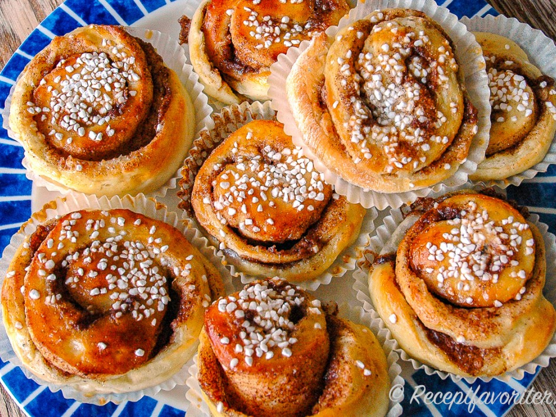
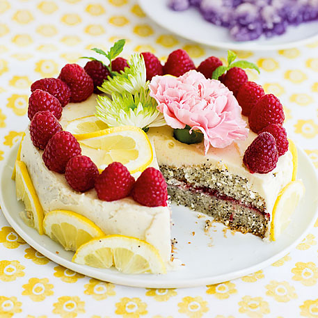
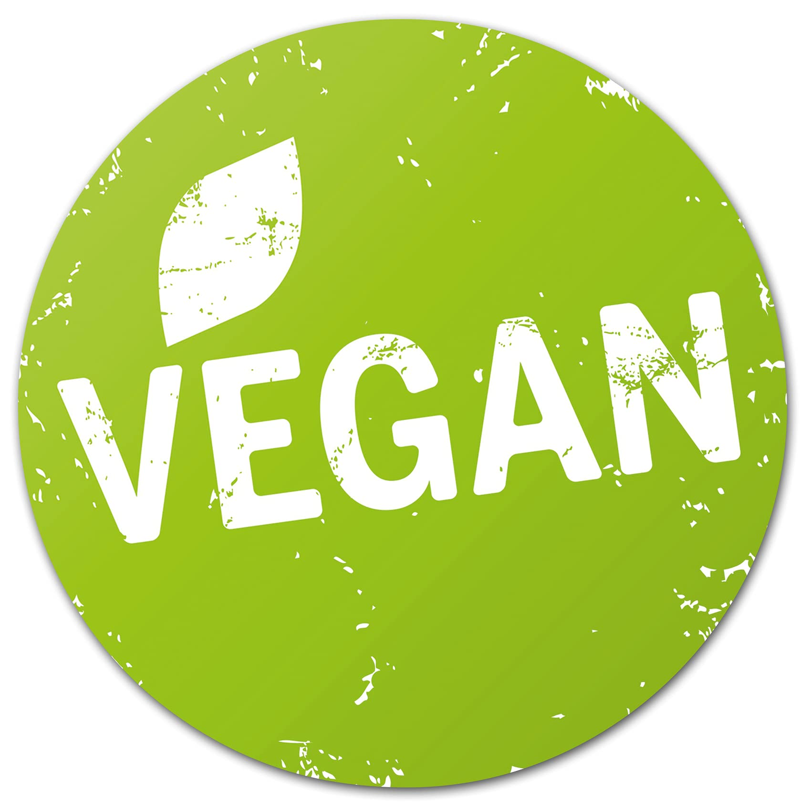
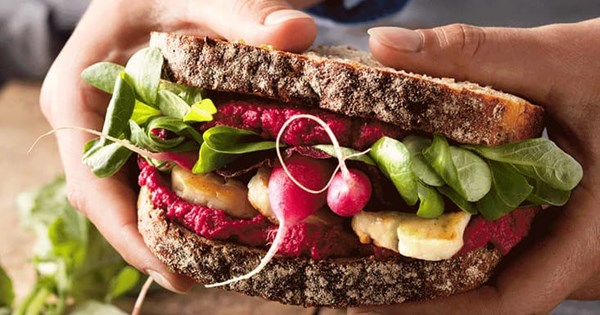

Meny - Våra rekommendationer
Sofias Signaturbulle
En klassisk handsnurrad vetebulle bakad på stenugnsmalet mjöl från trakten. Hemligheten ligger i det brynta smöret som ger en nötig karaktär, toppad med nystött kardemumma och ett stänk pärlsocker. En smak av barndom och hantverk i varje tugga.

Solglimts Rostade Säsongsespresso

Vi byter regelbundet våra bönor för att följa kaffeskördarna runt om i världen. Just nu serverar vi en fyllig espresso med toner av mörk choklad och mogna stenfrukter. Bönorna rostas varsamt i små partier för att bevara sin unika karaktär och friskhet.
Tårta med Hallon & Citron
En fräsch och färgstark tårta gjord helt utan tillsatt socker. Basen består av dadlar och mandlar, toppad med ett lent lager av krämiga cashewnötter, syrlig citron och solmogna hallon. En dessert som är lika god som den är snäll mot kroppen
Gårdens Surdegssandwich med Rödbetshummus & Rostade Frön
Ett mättande lunchalternativ. Två rejäla skivor av vårt eget långtidsjästa surdegsbröd fyllda med en färgstark rödbetshummus, krispig ekologisk sallad och picklad rödlök. Vi toppar den med en näve rostade solrosfrön för extra krisp och ringlar över lite lokalproducerad rapsolja.